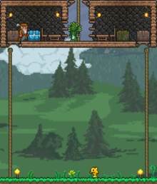
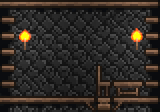
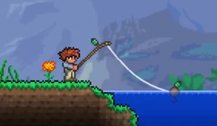

При запуске игры вас ждёт довольно красивое меню. Вам высветится посередине несколько надписей, нажимаем на надпись «Singleplayer» (Одиночная игра.). Первым делом нажимаем там на кнопку «Создать персонажа» и делаем его. При создании персонажа можно выбрать пол, саму причёску, цвет глаз, одежды и прочие параметры, а также его сложность. Всего в игре 4 сложности:
После того, как вы создали персонажа, необходимо сгенерировать мир. Все что от вас нужно, это придумать имя(с версии 1.4 имена можно сгенерировать), сид, размер и сложность. В игре на версии 1.4 для выбора представляются 4 сложности:
Также в игре присутствует Умный курсор (смарт-курсор), который сам наводится на блоки и взаимодействует с ними в зависимости от их типа (например ставит/ломает блоки, открывает сундуки и т. д.), при нажатии ЛКМ/ПКМ. Активировать/Отключить его можно по нажатию на "LeftControl".
С наступлением ночи аступлением ночи вам нужно будет укрытие, так как ночью на поверхности появляется множество сильных монстров. Для того, чтобы сделать его, вам понадобится твёрдый материал, например древесина или камень. Двери и стены (плюс фоновые стены) будут препятствовать появлению монстров внутри вашего жилища.
Прежде чем строить дом, начните с поиска плоского ландшафта, последовательно делайте «наброски» дома из собранных вами материалов. Но лучше конечно Построить дом в воздухе, к примеру можно построить вертикальные столбы из верёвок (они будут использоваться как вход) и на конце этих столбов уже строить комнаты (см. на картике №1). Конечно, если вы не успеваете до наступления темноты, и (или) не можете найти нужное место, можно построить временный дом (коробка, яма). Помните, что лучше строить дом на месте вашего появления в мире, только на один блок ниже. В противном случае вы будете разрушать блоки на месте появления. Когда ваш персонаж будет убит, вы автоматически переместитесь на ту точку, на которой вы появились в начале игры.
 Вскоре Вам, для облегчения игры, понадобиться НИПы. Чтобы НИПы обжились в доме, необходимо наличие поставленной двери. Удалите три вертикальных блока (под рост персонажа) и поставьте на их месте дверь. После этого следует поставить фоновые стены в доме (каменные или деревянные). Фон дома должен быть полностью заполнен. Смастерите факел и поместите его внутри здания. Этот источник света необходим НИПу для проживания. Вам также понадобятся одно рабочее место и один предмет комфорта (простейший вариант — комната 10 × 6 (Для экономии дерева можно сделать из платформ), стол и стул, но можно, например, кровать с верстаком) в вашем доме для НИПов. (см. на картинке №2)
ВАЖНО! Чтобы дом подходил для проживания НИПу, в полу должен быть хотя бы один блок дерева и обязательно под стулом (для того чтобы НИПы могли садится на сту
Теперь, когда у вас есть безопасное убежище, вам захочется немного заняться исследованием мира. Вперёд! Вот на что надо обратить внимание:
Теперь, когда у вас есть ресурсы и своё убежище, можно отправиться путешествовать по миру, в нем Вы можете найти разные биомы о которых будет идти речь дальше.
Мобы: Стервятник, Муравьиный лев, Взрослый муравьиный лев, Муравьиный лев-воин, Пустынный ползун.
Предметы: Кактус, Воднолист, Челюсть муравьиного льва, Песок
Ценности: Пирамида
Сложность: выше среднего
Пустыня — биом, который полностью состоит из песка, и в нем спавнятся довольно опасные для новичков мобы — стервятники и муравьиные львы. Так же есть шанс найти в пустыне пирамиду с сокровищами. В пустыне есть свой аналог деревьев — кактус (Пальмы). Добыв его, можно сделать неплохое для новичка снаряжение. В пустыне иногда можно найти громадный провал вниз, который ведёт в пещеры с опасными мобами — подземные пустыни. Берегитесь: из провала могут вылететь сильные летающие монстры, которые способны с лёгкостью убить неподготовленного персонажа.
Мобы: Ледяной слизень, ночью: Зомби-эскимос
Предметы: Снег, Лёд, Гель, Северная древесина
Ценности: Сундуки, Пещеры
Сложность: ниже среднего
В этом биоме лёгкие и слабые монстры, но спускаясь в пещеру, вы увидите более мощных, таких как скелет-викинг. Также тут есть сундуки с полезными вещами. И ко всему этому со стороны Снежного биома всегда находится Данж.
Если вы найдете гигантское дерево, можно пустить его на дрова или же поселиться в нем, кроме того, у некоторых деревьев в корнях можно найти комнату с сокровищами, в которой уже есть стол, стулья и двери, поэтому, поставив источники освещения, можно заселить в этой комнате НИПов. Также можно найти сундук, который по содержанию похож на обычный, однако содержит в себе ветвь живого дерева, жезл листвы и иногда станок из живой древесины.
Мобы: Пожиратель душ, Поглотитель
Предметы: Гниль, Мерзкий гриб, Зуб червя, Эбонитовая древесина,Древняя теневая броня, Смерть-трава
Ценности: Теневая сфера, Демонит, Демонический алтарь
Сложность: выше среднего — сложная
Искажение — это опасный биом, где можно найти редкие предметы, но идти туда следует с хорошим снаряжением, например, с крюком-кошкой, потому что здесь есть расщелины, куда можно провалиться.
Из местных летающих монстров — пожирателей душ, может с очень маленьким шансом выпасть часть комплекта древней теневой брони. Но даже одна такая часть может стать серьёзным бонусом к боеспособности персонажа.
Спустившись в подземное искажение, вы найдете много алтарей и теневых сфер, лежащих за слоем эбонита. Сломать стандартным вооружением эбонит нельзя, поэтому закупитесь бомбами и динамитом у подрывника и сломайте сферы. Также можно купить у дриады очищающий порошок и использовать его на эбоните, превращая его в обычный камень. Из сфер выпадают уникальные предметы — но будьте осторожны! Разбитие третьей сферы приведет к призыву Пожирателя миров, так что будьте готовы. Победив его, вы получите демонит и теневую чешую, из которых можно сделать оружие, инструменты и броню.
Помимо этого, в подземном искажении есть обширные природные залежи демонита, который можно добыть теми же бомбами или киркой по равной мощности, либо мощнее золотой кирки.
Мобы: Кримера, Лицемонстр, Кровавый ползун
Предметы: Позвонок, Порочный гриб, Древесина тьмы,Смерть-трава
Ценности: Живое сердце, Кровавый алтарь
Сложность: Сложная
Кримзон — это альтернатива искажению, в которой имеются свои мобы и босс. Вместо расщелин здесь широкие проходы в подземный кримзон, где находится много живых сердец и алтарей. В самом начале рекомендуем не ходить туда, мобы там сносят большой урон и имеют много здоровья.
Подземный кримзон во многом схож с искажением. Вместо теневых сфер — живые сердца. С разбитием каждого третьего сердца призывается босс — Мозг Ктулху, при победе над которым можно получить ценные ресурсы для создания новой брони и оружия. Также его можно призвать с помощью кровавого позвоночника.
В отличие от подземного искажения, в подземном кримзоне нет залежей кримтановой руды, в то время, как в искажении есть демонит.
Мобы: Гарпия и в хардмоде(после убийства Стены Плоти) Архививерна (мобильная версия), Виверна
Предметы: Перо, Дерево, Мебель небесных островов, разная Руда.
Ценности: Сундук / Озеро
Сложность: выше среднего — сложная
Парящие острова расположены высоко в небе и без помощи зелья гравитации до них добраться очень трудно. Вокруг этих островов летают гарпии — опасные мобы, умеющие стрелять перьями. Для неподготовленного игрока они могут стать трудными противниками, особенно в большом количестве.
На летающем острове может быть либо большое озеро, либо фрагмент леса, либо сокровищница с небесным сундуком и фрагмент леса. На острове могут сгенерироваться разные рудные жилы, подсолнухи и деревья. Также, предметы, лежащие в небесных сундуках приятно вас порадуют.
Чуть выше парящих островов расположен небольшой биом космоса. Его отличие в абсолютно чёрном, космическом фоне, ослабленной гравитации и в повышенном количестве гарпий.
Мобы: Акула, Медуза, Краб, Кальмар, Морская улитка, Разведчик гоблинов
Предметы: Акулий плавник, Светящаяся палочка, Порванная ткань, Воднолист.
Ценности: Сундуки, Редкий дроп, Особый улов, Ингредиенты для красителей
Сложность: выше среднего
Океаны расположены в левой и правой границах мира, на поверхности, соответственно в мире всегда присутствуют два океана. В океане есть множество подводных монстров. Кроме монстров, глубоко под водой есть водные сундуки с полезным лутом.
Для исследования подводной зоны океана рекомендуется оружие дальнего боя, одновременно генерирующее свет. Например: лук с морозными стрелами, которые светятся и горят даже под водой. Будьте осторожны, в любой момент на вас может напасть акула. У неё множество хит-поинтов, а её удары наносят большой урон.
Рядом с одним из океанов обязательно будет расположен данж.
Мобы: Злые кости, Тёмный колдун, Проклятый череп, Огненное кольцо, Слизень данжа, Шипастый шар
Предметы: Кость, Водяная свеча, Малое зелье лечения, Книга, Готическая мебель, Мебель данжа, Водяная стрела, Голубая луна
Ценности: Сундуки, Редкий дроп
Сложность: Сложная
Данж — биом, при походе в который нужно запастись сильным оружием и бронёй. Данж представляет собой крепость, в которой находится много сокровищ и опасных монстров, но войти туда можно только после убийства Скелетрона. Чтобы призвать босса, нужно поговорить с НИПом-стариком у входа в данж ночью. Убив Скелетрона, вы получите артефакты, деньги, вещи и доступ к самому данжу.
При попытке войти в Данж без убийства Скелетрона, при достижении глубины ниже нулевой отметки на уровне моря вас попытается убить (и, скорее всего, сделает это) Хранитель Данжа.
Мобы: Шершень, Похититель, Пчелы, Мобы из пещер, Шипастый слизень джунглей, Людоед
Предметы: Семена джунглей, Жало, Споры джунглей, Роза Джунглей, Дар природы, Луноцвет
Ценности: Сундуки, Редкий дроп, Улей, Храм ящеров
Сложность: Сложная
Теперь можно отправляться в джунгли. В пещерах джунглей обитает много опасных существ, но, убив их, вы можете получить вещи для создания брони и оружия джунглей. В джунглях присутствует особый тип древесины - красная древесина, или же махагони, а так же здесь растет бамбук, так же являющийся аналогом дерева.
Мобы: Огненный черт, Огненная летучая мышь, Лавовый слизень, Демон, Демон вуду, Костяной змей
Предметы: Адский камень, Обсидиановая мебель, Лава, Огненный цветок, Ярость Солнца
Ценности: Сундуки, Редкий дроп, Кукла вуду гида, Горшки
Сложность: очень сложная
Ад — самый опасный дохардмодный биом. Опасен он из-за сильных мобов и большого количества лавы. Также тут можно найти теневые сундуки с уникальными вещами (потребуется теневой ключ, который находится в одном из сундуков данжа, (чаще всего в самом первом) который открывает теневые сундуки), крепости с мебелью, картинами и большим количеством горшков.
Набрав руды, вам нужно сделать в первую очередь пламенный меч: он послужит ингредиентом для Грани ночи (Если вы уже знакомы с классами, и имеете сильное оружие и броню для вашего класса - делать это не обязательно: Литая кирка будет полезней). При нахождении и убийстве демона вуду, вам выпадет кукла вуду гида, и, кинув её в лаву, вы призовете ключевого босса игры — Стену плоти.
 Террария — это не только непрерывный геноцид монстров и умерщвление боссов, в ней есть мирные аспекты. Одним из таких аспектов является рыбалка. Что такое рыбалка? Рыбалка — это мирный способ получить хорошее снаряжение в начале игры, не бегая по опасным и тёмным шахтам в поисках руды, постоянно умирая в процессе. Ещё в самом начале игры, просматривая список крафтов из дерева на деревянном же верстаке, можно наткнуться на деревянную удочку. Это — первое рыбацкое орудие.
Однако одной только удочки для рыбалки недостаточно, нужна ещё Наживка. Наживку можно раздобыть, поймав её сачком, который можно купить у торговца. Основные виды наживки — это червь и светлячок. Светлячки в обилии появляются ночью, если вы постоите на одном месте некоторое время. Черви могут появляться во время дождя или при разбивании различных кучек камней, поросших мхом, которые можно встретить на поверхности повсеместно.
Конечно же, наживки и удочки для рыбалки будет недостаточно. Нужен водоём, в котором можно рыбачить. Чем больше водоём, тем эффективнее будет рыбалка, в слишком маленьких водоёмах рыбалка вообще невозможна. В качестве водоёма для рыбалки рекомендуется океан, помимо стандартного улова там можно выловить: рыбу-меч, которая может стать хорошим начальным оружием; акулу-кирку, которая является отличной киркой дохардмода и рыбу-пилу, которой можно быстро пилить деревья и монстров.
Также океане можно найти специального НИПа-рыбака. Он будет давать вам задания на поимку той или иной рыбы, а взамен на эту рыбу будет выдавать некоторое вознаграждение. И чем больше заданий будет выполнено, тем лучше будет награда.
Рыбача, можно выловить много полезных вещей — ящики, лягушачью лапку, воздушную рыбу-фугу, рыбу-зефир. Но, эти вещи являются весьма редким уловом. Для того, чтобы заполучить их потребуются усидчивость и упорство.
Также Рыбача, можно выловить много полезных вещей — ящики, лягушачью лапку, воздушную рыбу-фугу, рыбу-зефир. Но, эти вещи являются весьма редким уловом. Для того, чтобы заполучить их потребуются усидчивость и упорство.
Все делалось с помощью программы Brackets
Brackets — проект с открытым исходным кодом. Веб-разработчики со всех уголков мира способствуют созданию лучшего редактора кода. Многие разрабатывают дополнения, которые расширяют возможности Brackets. Расскажите нам, что вы думаете, поделитесь идеями или непосредственно поддержите проект.